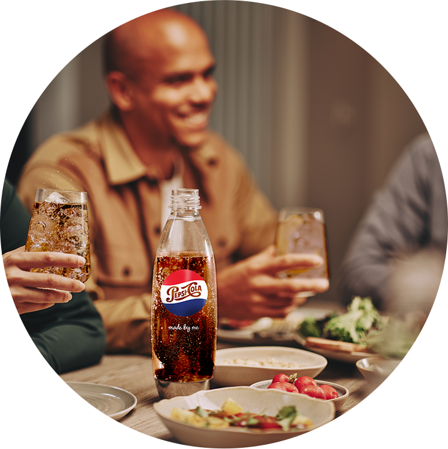
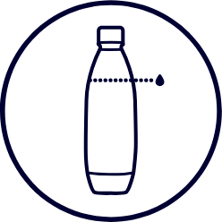
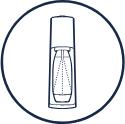
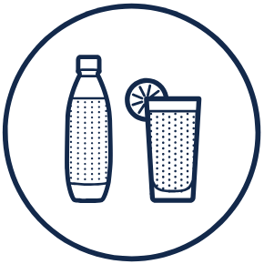

Butelka
Fuse Pepsi made by you, 1l
Przygotuj się na stylowe miksowanie – butelka SodaStream Fuse Pepsi Made By You to połączenie funkcjonalności, wygody i ducha klasyki, którą przywołuje kultowa Pepsi.


Pepsi made by you - stylowy design, twój smak

Oliwia robi najlepszą PEPSI®*
*według Oliwii

Saturator + syrop SodaStream Pepsi + Ty = idealny przepis na smak, który gra według Twoich zasad. Bo kto jak kto, ale Ty wiesz najlepiej, jak smakuje idealna Pepsi.
Elegancka butelka SodaStream Fuse Pepsi Made by You przyciąga wzrok klasycznym designem inspirowanym legendarną Pepsi. Wykonana z trwałego Tritanu i wykończona detalami ze stali nierdzewnej, doskonale łączy styl z funkcjonalnością, podkreślając smak przygotowanej przez Ciebie Pepsi.


Postaw na ekologię - wybierz butelkę na lata!
Butelka SodaStream Fuse Pepsi Made by You 1 l została zaprojektowana z myślą o wieloletnim użytkowaniu - to trwała i elegancka alternatywa dla jednorazowych butelek plastikowych. Możesz w niej gazować wodę i przechowywać napoje gazowane nawet przez 4 lata użytkowania - bez utraty szczelności - a po tym czasie możesz jej używać jako bidonu do napojów niegazowanych.
3 proste kroki do domowej Pepsi ...i nie tylko!
1
Napełnij butelkę zimną wodą do wyznaczonej linii.
2
Zamontuj butelkę w saturatorze i nagazuj tak jak lubisz, jednym kliknięciem.
3
Dodaj swój ulubiony syrop SodaStream, wymieszaj i gotowe!
Do jakich saturatorów pasuje butelka Fuse Pepsi Made by You?
Butelka Fuse Pepsi Made by You jest kompatybilna z saturatorami SodaStream Terra, ART, Duo, Ensō, Spirit oraz Source.
Design z klasą, bąbelki z charakterem
Kultowe napoje w najlepszym wydaniu
Pepsi, Mirinda, 7UP i Lipton Ice Tea Green - stwórz własną interpretację znanych klasyków!
Na luzie i z energią
Tonic, Cola, Cytryna Limonka i Xtreme Energy - niezawodne i ponadczasowe smaki, do których zawsze chce się wracać.
Letni vibe przez cały rok
Marakuja, Pomarańcza Mango, Malina - to owocowe syropy z witaminami, lecz bez dodatku cukru - lekkie i orzeźwiające.